Precisão que constrói confiança.
TECNOLOGIA E EXPERIÊNCIA para transformar dados em soluções.
Levantamentos topográficos, georreferenciamento, aerolevantamento com drone, modelagem digital do terreno e acompanhamento de obras com equipamentos de última geração.
Áreas de Atuação
A JF Topografia presta os mais diversos serviços com o uso de tecnologias avançadas e profissionais qualificados.
Levantamento Planialtimétrico Cadastral
É o levantamento detalhado das características do terreno, registrando dimensões, relevo, construções, limites e confrontações. Essas informações servem como base para projetos de engenharia, arquitetura e regularização de imóveis.
 Levantamento planimétrico e altimétrico da área.
Levantamento planimétrico e altimétrico da área.
- Localização de limites e confrontações.
- Cadastro de construções existentes.
- Curvas de nível e relevo do terreno.
- Base para projetos de engenharia e arquitetura
- Alta precisão e confiabilidade
- Solicite um orçamento
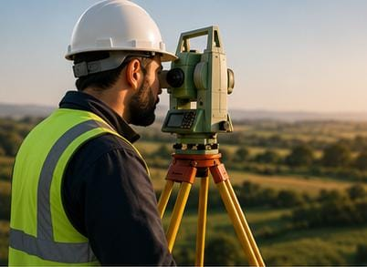
Levantamento Planialtimétrico Georreferenciado
Consiste no levantamento topográfico utilizando coordenadas geográficas precisas, obtidas por equipamentos GNSS/GPS RTK e referenciadas ao Sistema Geodésico Brasileiro. É utilizado principalmente na regularização de imóveis e na elaboração de documentos técnicos.
- Levantamento com coordenadas georreferenciadas.
- Utilização de GPS/GNSS RTK.
- Referenciado ao Sistema Geodésico Brasileiro.
- Implantação de marcos geodésicos.
- Memorial descritivo.
- Ideal para regularização de imóveis.
- Solicite um orçamento
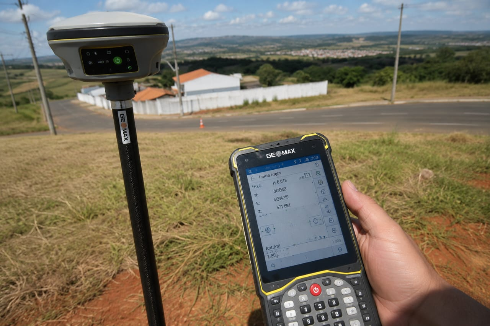
Aerolevantamento com Drone (VANT)
Utiliza drones para capturar imagens aéreas de alta resolução, permitindo a criação de ortomosaicos, modelos digitais do terreno, curvas de nível, nuvens de pontos em 3D e cálculos de volumes. É uma solução rápida e eficiente para levantamentos de grandes áreas.
- Captura de imagens aéreas em alta resolução.
- Ortomosaico.
- Modelo Digital de Terreno (MDT).
- Modelo Digital de Superfície (MDS).
- Nuvem de pontos 3D.
- Curvas de nível.
- Cálculo de volumes.
- Monitoramento de áreas.
- Solicite um orçamento.
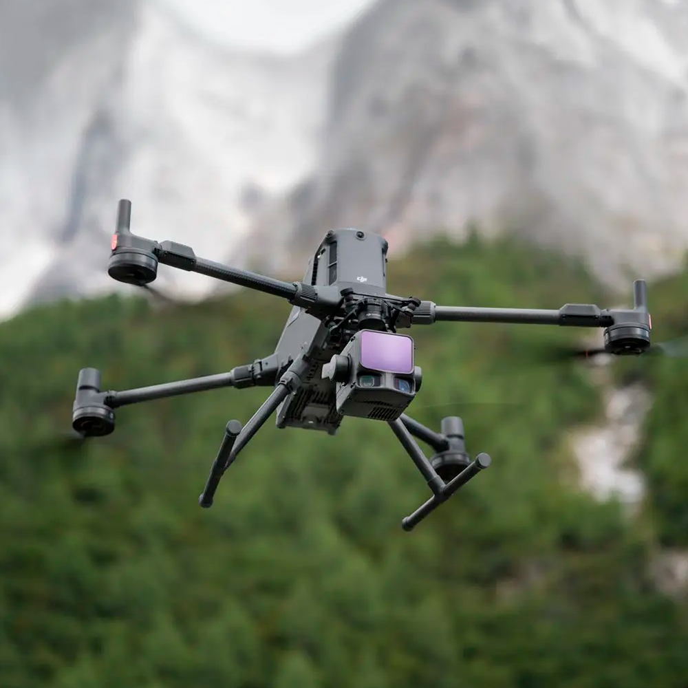
Georreferenciamento de Imóveis Rurais
É o processo de definir com precisão os limites de uma propriedade rural, seguindo as normas do INCRA. O levantamento gera plantas e memoriais descritivos necessários para certificação, registro em cartório e regularização fundiária.
- Georreferenciamento conforme normas do INCRA.
- Certificação do imóvel rural.
- Levantamento dos vértices.
- Memorial descritivo.
- Planta georreferenciada.
- Registro em cartório.
- Regularização fundiária rural.
- Solicite um orçamento
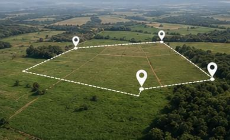
Desmembramento e Remembramento de Áreas
Refere-se à divisão de um terreno em lotes menores (desmembramento) ou à união de dois ou mais imóveis em um único terreno (remembramento). O processo exige plantas, memorial descritivo e aprovação dos órgãos competentes.
- Divisão de terrenos.
- Unificação de imóveis.
- Elaboração de plantas.
- Memorial descritivo.
- Aprovação junto à Prefeitura.
- Regularização documental.
- Atendimento à legislação vigente.
- Solicite um orçamento
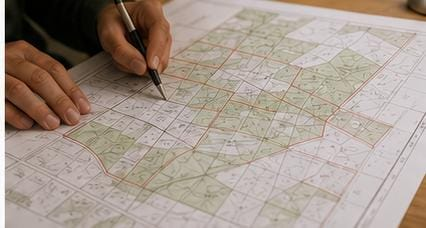
Locação de Obras
É a etapa em que o projeto é transferido para o terreno, marcando a posição exata de fundações, pilares, vigas, eixos e níveis. Essa atividade garante que a construção seja executada conforme o projeto.
- Locação de fundações.
- Locação de pilares.
- Locação de vigas.
- Locação de eixos.
- Marcação de níveis.
- Conferência da execução.
- Precisão durante toda a obra.
- Solicite um orçamento
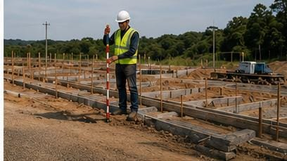
Acompanhamento Topográfico de Obras
Consiste no monitoramento contínuo da obra para verificar se a execução está de acordo com o projeto. Inclui conferência das locações, controle de terraplenagem, medições e emissão de relatórios técnicos.
- Controle topográfico da obra.
- Conferência de locações.
- Medição da evolução dos serviços.
- Controle de terraplenagem.
- Relatórios técnicos.
- Garantia de precisão na execução.
- Solicite um orçamento
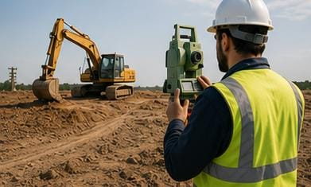
Levantamento para Projetos de Loteamentos
É o levantamento completo de uma área destinada à implantação de loteamentos, identificando relevo, construções, vegetação e demais elementos existentes. As informações servem de base para projetos urbanísticos e infraestrutura.
- Levantamento completo da área.
- Curvas de nível.
- Cadastro de elementos existentes.
- Base para projetos urbanísticos.
- Planejamento da infraestrutura.
- Apoio ao licenciamento.
- Solicite um orçamento
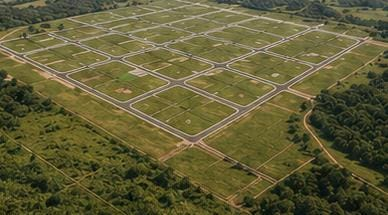
Levantamento As Built
É realizado após a conclusão da obra para registrar exatamente como ela foi construída. Documenta todas as alterações feitas durante a execução e atualiza os projetos para facilitar futuras manutenções e ampliações.
- Levantamento da obra executada.
- Atualização dos projetos.
- Cadastro das alterações realizadas.
- Modelo 2D e 3D.
- Documentação técnica final.
- Apoio à manutenção da edificação.
- Solicite um orçamento
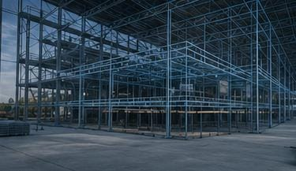
Cálculo de Volumes de Corte e Aterro
Utiliza levantamentos topográficos e modelos digitais para calcular a quantidade de solo que deverá ser retirada (corte) ou adicionada (aterro). Esses cálculos ajudam no planejamento da terraplenagem e na redução de custos.
- Levantamento do terreno.
- Modelagem digital.
- Cálculo de corte.
- Cálculo de aterro.
- Relatórios de volumes.
- Planejamento da terraplenagem.
- Redução de custos.
- Solicite um orçamento
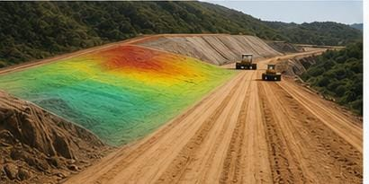
Cadastro Técnico Multifinalitário
É um sistema de informações que reúne dados sobre imóveis urbanos e infraestrutura, como redes de água, esgoto, drenagem, energia elétrica, iluminação e pavimentação. Auxilia no planejamento urbano e na gestão municipal.
- Cadastro urbano.
- Rede de água.
- Rede de esgoto.
- Drenagem.
- Energia elétrica.
- Iluminação pública.
- Pavimentação.
- Planejamento urbano.
- Gestão municipal.
- Solicite um orçamento
Batimetria
É o levantamento da profundidade e do relevo do fundo de rios, lagos, açudes e reservatórios. Os dados permitem elaborar mapas batimétricos, calcular volumes de água e monitorar processos de assoreamento.
- Levantamento do fundo de rios.
- Levantamento de lagos.
- Levantamento de açudes.
- Levantamento de reservatórios.
- Mapa batimétrico.
- Perfil do fundo.
- Cálculo de volumes.
- Monitoramento de assoreamento.
- Solicite um orçamento
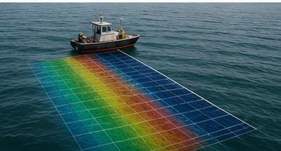
Inspeção Técnica com Drone
Utiliza drones para realizar inspeções em telhados, fachadas, torres, pontes e linhas de transmissão. Essa tecnologia permite obter imagens detalhadas com maior segurança, rapidez e redução de custos, sem necessidade de acesso direto aos locais de risco.
- Inspeção de telhados.
- Inspeção de fachadas.
- Inspeção de torres.
- Inspeção de linhas de transmissão.
- Inspeção de pontes.
- Imagens em alta resolução.
- Redução de riscos.
- Relatórios técnicos.
- Solicite um orçamento
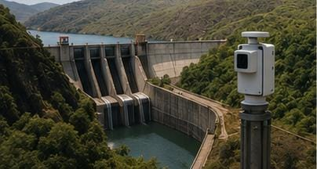
Monitoramento de Barragens e Estruturas
Consiste no acompanhamento periódico de barragens, pontes, edifícios e outras estruturas para identificar deslocamentos, recalques e deformações. São utilizados equipamentos de alta precisão para garantir a segurança estrutural e prevenir falhas.
- Monitoramento de deslocamentos.
- Controle de recalques.
- Estação total robotizada.
- GNSS de alta precisão.
- Relatórios periódicos.
- Gráficos de acompanhamento.
- Segurança estrutural.
- Solicite um orçamento
Regularização Fundiária
É o conjunto de procedimentos técnicos e legais que visa regularizar imóveis urbanos e rurais. Inclui levantamento topográfico, georreferenciamento, elaboração de plantas e memoriais descritivos, proporcionando segurança jurídica aos proprietários e permitindo o registro legal do imóvel.
- Levantamento topográfico.
- Planta de situação.
- Memorial descritivo.
- Georreferenciamento.
- Regularização de imóveis urbanos e rurais.
- Documentação para registro.
- Segurança jurídica.
- Apoio em processos de usucapião.
- Atendimento às exigências legais.
- Solicite um orçamento
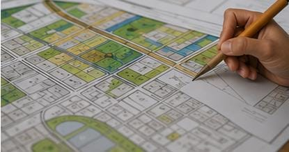
Serviços adicionais
- Curso de Topografia de curta duração para
empresas e profissionais liberais.
- Utilizamos sempre equipamentos de última geração
como Estações Totais, Níveis
convencionais e Eletrônicos, GPS com Tecnologia RTK, Drones, respeitando
sempre as
especificidades de cada serviço..
- Solicite um orçamento
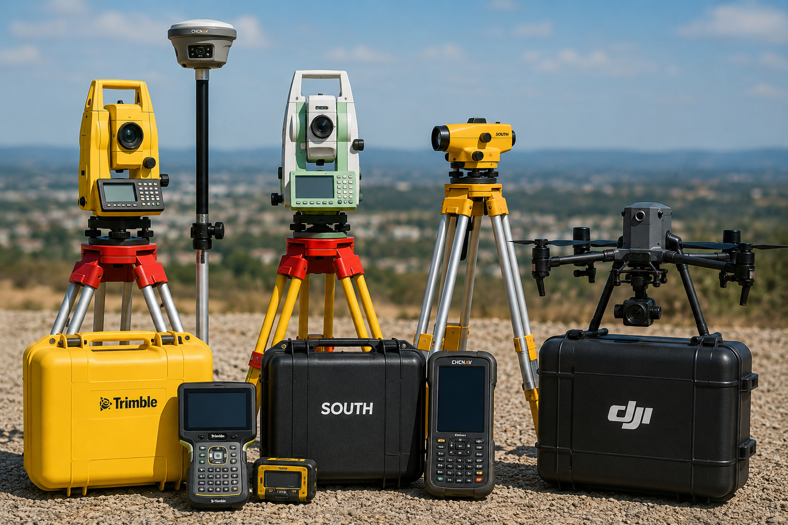
Faça sua cotação online
Estamos prontos para atender todas as suas necessidades.